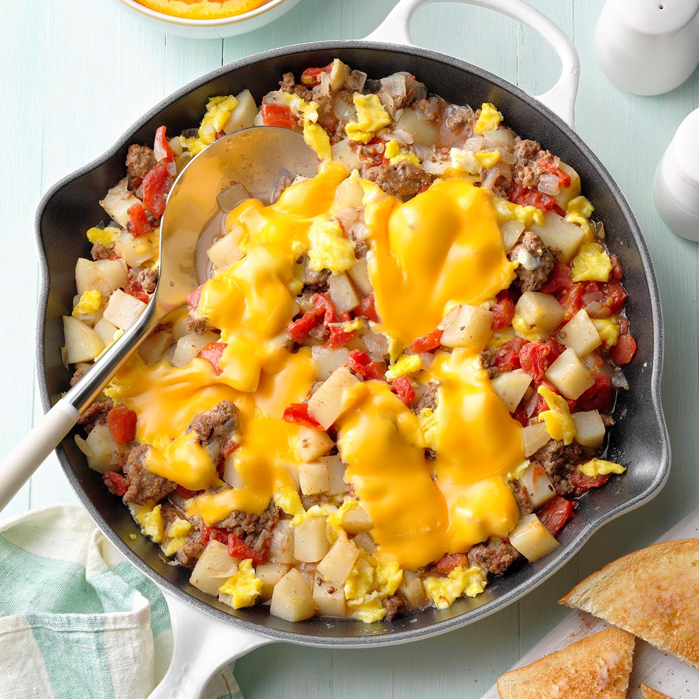

Scramble

Description
A mouth watering mixture of fried potatoes, scrambled eggs, sausage and cheese.
Ingredients
- 12 Eggs
- 4 Sausages
- 3 Potatoes
- 1 Block of Cheese
- Fry the potatoes in a large skillet on medium-high heat until they start browning evenly. Stir as needed.
- Scramble the eggs in a large bowl. You can optionally add a dash of salt and pepper here.
- Add in sausage to cook alongside the potatoes. Continue stirring.
- When meat cooks to your liking pour eggs over the whole skillet and let them cook.
- Continue to stir the whole thing to prevent burning of the eggs.
- Add cheese on top and turn heat to low or off. Put a lid on skillet to allow cheese to melt.
- Finished!